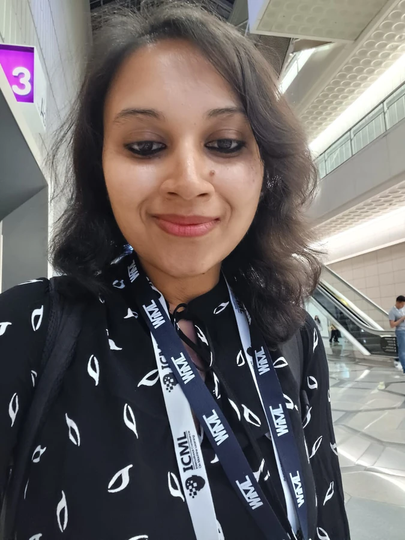

PHYSICAL AI · WORLD MODELS · ROBOT LEARNING
Sharmita Dey.
Understanding the world. Learning to act within it.
I build learning systems that connect perception, prediction, and action so robots can understand their surroundings, adapt to change, and collaborate with people.

in the physical world.
Recent news
Follow on LinkedInResearch directions: World and foundation models for interaction and control
My current focus is physical AI: world and foundation models for scene understanding and control, together with continual learning models that adapt through experience.
My vision: Physical AI that learns with people
My vision is to build embodied agents that learn continuously from the physical world and the people within it. World models should help robots anticipate the consequences of their actions, understand their partners, and turn experience into more capable, responsive behavior.
To achieve this, physical AI needs more than scale; it needs better learners. Like humans, robots should build on experience to learn from just a few examples. Every interaction with the world should make the next unfamiliar task easier to master.
Read the perspective in Science RoboticsUnderstand the world
Learn structured representations of scenes, objects, and physical dynamics.
Anticipate and adapt
Use imagined interactions to support control and continual learning.
Learn together
Build robot foundation models that account for humans and other agents.
Selected publications
Full list on Google ScholarNo matching papers. Try another search or choose “All selected.”
About: Research journey and leadership
I’m a researcher at the intersection of machine learning, robotics, and human–machine interaction. I am a Visiting Scholar at UC Berkeley working on world models for physical AI, and an incoming group leader establishing my own research group to develop a new generation of foundation and world models for embodied AI.
I am also a Guest Scientist at ETH Zurich’s Institute of Robotics and Intelligent Systems, following my postdoctoral research there from November 2024 through August 2026. My work brings together world models, continual learning models, multimodal representations, and foundation models to advance physical AI and intelligent assistive systems.
My path has taken me from decoding human intent at DLR to field robotics at NASA JPL, and from a PhD in computer science at the University of Göttingen to robot foundation models. I earned my doctorate with summa cum laude (highest distinction).
I also mentor through Women in Machine Learning and Machine Learning for Health, supervise early-career researchers, and review for leading AI and robotics venues.
View my publications on Google ScholarPositions & research journey
- CURRENT
Visiting Scholar
University of California, Berkeley
- INCOMING
Research Group Leadership
World foundation models for embodied interactions
Supported by a €2.2 million Volkswagen Foundation grant - CURRENT
Guest Scientist
ETH Zurich · IRIS
- NOV 2024 to AUG 2026
Postdoctoral Researcher
ETH Zurich · IRIS
- AUG 2026 to NOW
Science Resident
Innovation Park Artificial Intelligence Foundation
- 2024 to 2025
Guest Scientist
University Medical Center Göttingen / University of Göttingen
- 2023 to 2024
Postdoctoral Researcher
University of Göttingen
- 2021 to 2022
Robotics Research Affiliate
NASA Jet Propulsion Laboratory
- 2019 to 2023
PhD in Computer Science
University of Göttingen · Summa cum laude (highest distinction)
Let’s connect
Have a research idea, an opportunity, or a question? Send me a message. You can also attach your CV.
Connect on LinkedIn